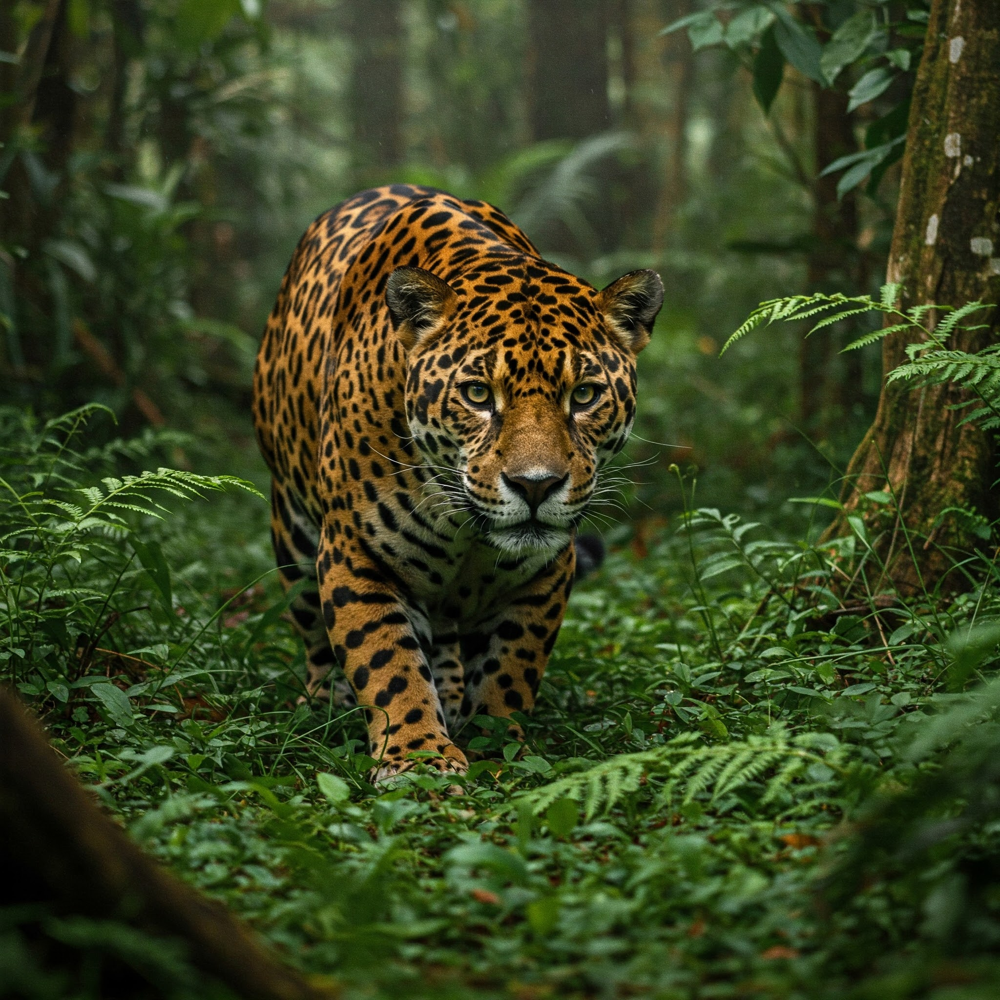
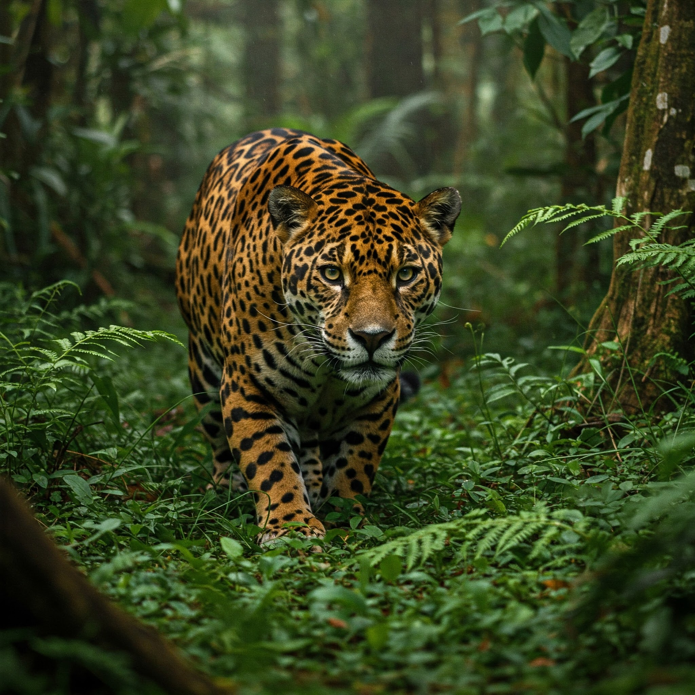
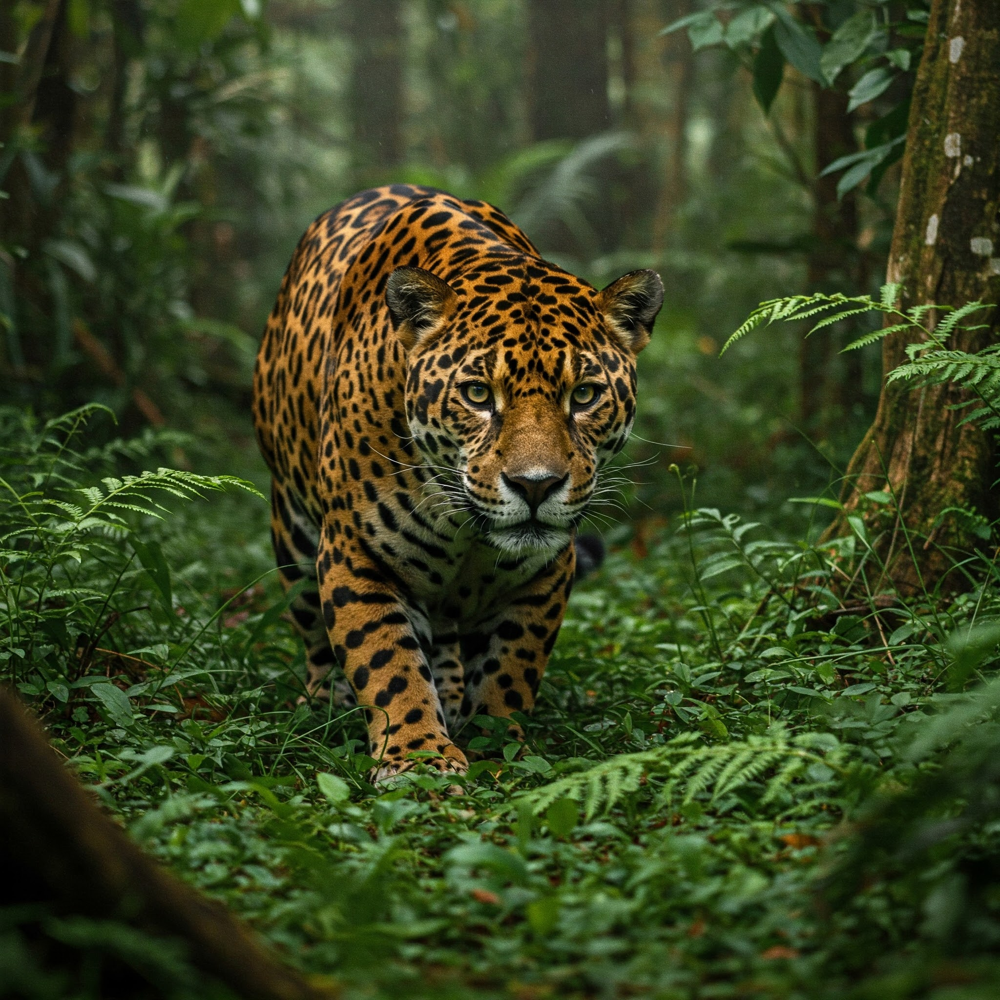

Galeria de Imagens
 

A onça-pintada (Panthera onca) é o maior felino das Américas e um símbolo de força e beleza. Encontrada em habitats como a Amazônia, o Pantanal e o Cerrado, ela desempenha um papel crucial no equilíbrio dos ecossistemas.
Infelizmente, a onça-pintada está ameaçada pela perda de habitat e pela caça ilegal. Sua conservação é essencial para a biodiversidade.
A onça-pintada é encontrada em florestas densas, onde pode caçar e se camuflar com facilidade.
Ela é um predador solitário, conhecido por sua força e habilidade de caça.
Também habita regiões como o Pantanal, onde é comum vê-la próxima a rios e lagos.

A onça-pintada está ameaçada de extinção. Existem atualmente projetos de monitoramento que ajuda proteger esse animal incrível.